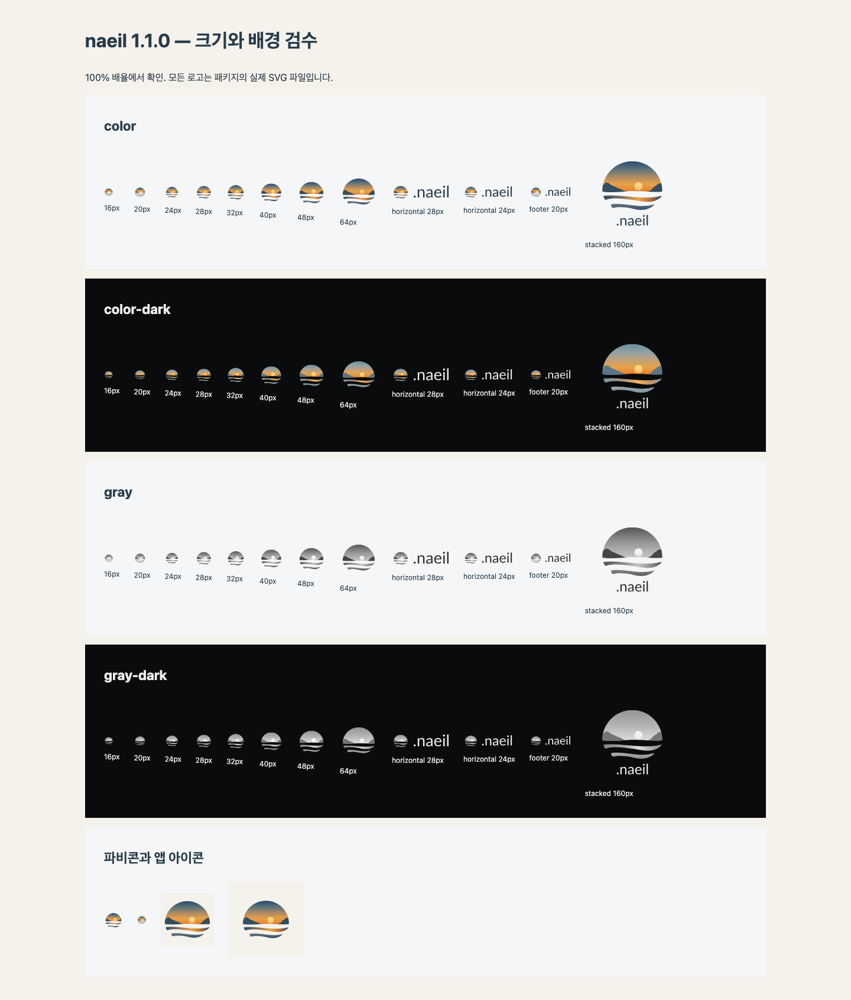
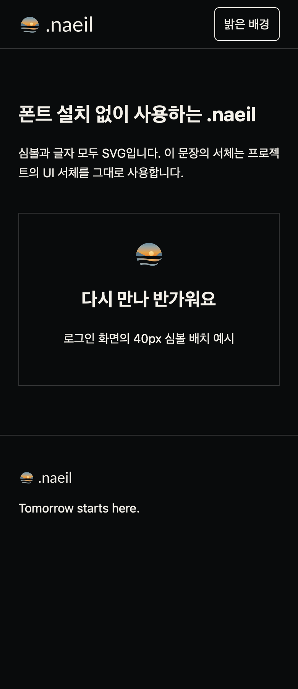

2026-10-11 · 사용자가 .naeil 표기 유지를 선택하여 워드마크를 갱신했다.
끝. 내일. 앞의 마침표는 하루를 마친다는 뜻이며, 뒤의 naeil은 그 다음의 내일을 뜻한다. 기존 리브랜딩 커밋 2efb1b0의 의도를 보존한다. 이 의미는 작은 점만으로 누구에게나 자동 전달된다는 주장이 아니라 브랜드가 유지하는 이야기다.
Lato Regular 400의 실제 period 글리프를 사용하고 HarfBuzz의 기본 조판 간격을 유지했다. 가로형·푸터형·세로형·글자 단독에 모두 점이 포함된다. 별도 점을 덧붙이거나 제공된 점을 생략하지 않는다. 심볼 단독과 파비콘에는 별도의 점을 추가하지 않는다.
헤더는 96.94×28px, 푸터는 70.10×20px다. 점 없는 1.0.1에 비해 각각 약 6.83px, 4.88px 넓어졌다. 점의 실제 경로 폭은 헤더 3.40px, 푸터 2.43px다. 글자 크기·색·심볼과의 간격은 유지했다.
파일·픽셀·대비 결과 · 마침표·심볼 동일성 결과 · 독립 브라우저 결과 · 패키지 링크·무결성 검사 · 조판 명세

WebKit 모바일 어두운 배경의 독립 사용 예제:

이번 결과는 1.1.0 파일과 복사한 독립 예제에 대한 새 검수다. 과거 점 없는 로고의 운영 사이트 임시 DOM 캡처를 이 버전의 증거로 재사용하지 않았다. 공유 React 컴포넌트 통합 검수는 저장소의 별도 기록으로 관리한다. Firefox, 실제 Safari/iPhone, 인쇄 교정, 새 상표 조사는 수행하지 않았다. 접근성 이름은 읽기 쉬운 naeil을 유지한다.
이 패키지를 사용해도 npm·naeil.dev는 자동 변경되지 않는다. 게시·배포는 수행하지 않았다. 도구: logo-icon-design, HarfBuzz, fontTools, librsvg, Pillow, Playwright Chromium/WebKit. 새 외부 디자인 도구나 이미지 생성은 사용하지 않았다.